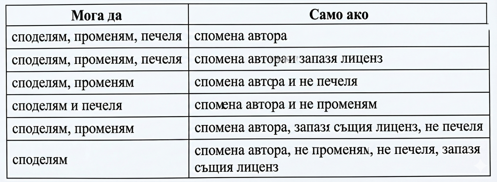

Специализирани софтуерни средства за създаване на уеб сайтове
HTML редактори за разработка на уеб сайт
Текстовите редакторисе използват за ръчно въвеждане на HTML КОД от специалистите.
Най-често използваните са Notepad++, Bluefish Editor, UltraEdit, EmEditor. Тези HTML и
свързаните редактори познават синтаксиса и структурата на с него езици (JavaScript, CSS, XML
и др.), улесняват пинането на кода и го правят по-четивен посредством подходящо
оцветяване.
Визуалните редакториреализират технологията WYSIWYG (What You See is What You Get) -
каквото виждате, това получавате. При нея уеб страницата се разработва с помощта на визуална
платформа и авторът вижда резултата от своите действия. WYSIWYG означава, че завършената уеб
страница ще изглежда точно по същия на чин, както е била проектирана. Основното предимство
на визуалните редактори е, че не е необходимо авторите да познават езика HTML, тъй като
кодът се генерира автоматично. Някои визуални редактори имат собствена интерпретираща среда,
а други асоциират външни уеб клиенти за интерпретация на HTML кода.
HTML шаблони- предварително създадени уеб страници или части от уеб страници. Те могат да
се използват многократно създаване на страници с подобно съдържание, като това улеснява процеса по
създаването на уеб сайт.
Авторски права и лицензи при използване на HTML редактори и шаблони– при работа с HTML редактори и използването на HTML шаблони изисква да
зачитате правата на авторите им и да посочвате източниците си на информация.
Creative Commons (Криейтив Комънс, превод от англ. –Творчески
общности)– нетърговска организация създала безплатни за ползване типове
договори - свободни и несвободни публични лицензи.

GNU General Public License (превод от англ. - Общ публичен лиценз на
ГНУ)- лиценз на свободен софтуер, по който авторът предава програмното
обезпечение в обществена собственост. GPL гарантира на потребителите на компютърни програми
определени права: да ползват програмата за каквато и да е цел; да изучават как работи
програмата и да я променят; да разпространяват нейни копия; да подобряват програмата и да
дават на обществото достъп до подобренията.